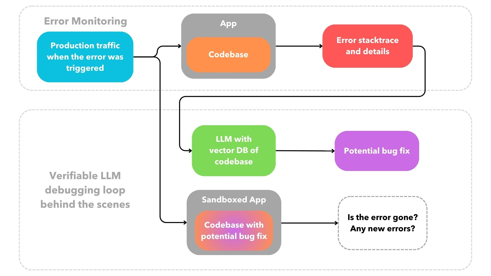

2024-02-24
The implications of a type of cloud infrastructure for containerized applications that can submit pull requests that verifiably fix existing production bugs while following codebase conventions are vast. For developers, using this type of self-healing infrastructure can mean spending significantly less time debugging, allowing us to focus on building new features and shipping faster. And for end-users, a smoother, more reliable experience.
The premise of self-healing infrastructure requires that the functionality of LLM generated code verifiably fixes a particular bug without introducing new ones. This type of verification is hard to consistently do with LLMs in general. LLMs can process a lot of unstructured information and quickly generate code faster than humans, but it is often code that is not production ready, or may not even run at all. It can be straightforward to programmatically verify if the code generated by an LLM is using valid syntax. However, the harder part is to programmatically verify that the generated code follows the functionality described to the LLM. Let's go over how we might be able to do that for LLM generated bugfixes by starting first with how we are currently using LLMs to debug.
what is the best interface or abstraction for debugging with LLMs?
----------------------------------------------------------------------------------------
Today, we debug errors with LLMs using chat-like interfaces within a terminal, website or code editor and we verify the LLM's generated code by perusing it and/or manually running it within our codebase. However, a more productive debugging workflow is possible outside of a chat interface where the mistakes made by the LLM are not visible to us.
With the right infrastructure setup, we can replay production traffic at the time of an error into the sandboxed app running an LLM-generated potential bugfix of said error in order to verify the correctness of the code generated. The desired output of the workflow is that the error goes away and no new error is introduced. This is a rough sketch of what I am describing:
We shouldn't have to peruse, or manually run, an LLM's generated code to know if it failed. We can evaluate the LLM's generated code programmatically as long as we know what the expected behavior of the generated code should be based on a previously determined input.
The LLM agent won't be able to fix most errors, but consequently we only see a pull request if and only if the code generated by the LLM is able to verifiably resolve the given error without introducing new ones. This means that at present it won't be fully self-healing as it will fail most of the time behind the scenes, but as the capabilities of generative AI models to retain more context increases and their lazy tendency to produce incomplete code or hallucinate decreases, the hit rate will go up and the self-healing capabilities of such a system will become more robust and valuable.
requirements for a verifiable LLM debugging loop behind the scenes
--------------------------------------------------------------------------------------------
The type of cloud offering that can propose bugfixes automatically needs two important features to be able to provide the best UX and easily run a behind-the-scenes LLM debugging loop like the one described above, or in other words, to let the LLM passively do the debugging for us:
1. git-based deployment process for containerized apps
A git-centered deployment experience is one that doesn't require us to configure a CI/CD in order to deploy, but
merely pushing to a git
branch. This workflow
has been
around since
2009
thanks to Heroku, the grandfather of all PaaS. This DevOps abstraction is amazing as it hides away a lot of
complexity
that often does not need to be exposed. I do wish more container cloud offerings today where as easy to use as the
webapp offerings of Netlify or Vercel. Fly.io
is one good example of a provider with a seamless,
git-based
deployment process for containerized apps. For most cases, it should really be
as simple as some form of pushing to a branch with a Dockerfile or docker-compose.yml in
it
without having to deal with the fairly standard DevOps process of:
Dockerfile
Cloud infrastructure that abstracts away the deployment process not only has a superior UX, but it also makes it possible to programmatically replicate deployments behind the scenes to test if an LLM can generate code that fixes a given bug, and do that repeatedly for all bugs, without an overly complicated CI/CD workflow, or some sort of spaghetti of yaml.
2. automatic replay of production traffic via SDK-less error monitoring
Highlight, DataDog and Sentry have led the charge in error monitoring. I have personally been a happy Sentry user for years. Their UI to triage, resolve and dive into errors does the job. Admittedly, the times where I have had to manually hook up a CI/CD to Sentry and programatically pass on information about deployments, releases, and compilation source maps across multiple environments it has been a massive pain. However, Sentry's setup works particularly well when using some sort of PaaS integration for it like the one offered by Vercel as it abstracts all of the complexity described above.
Most error monitoring tools offer SDKs to instrument errors within an app. However, a
few
offerings like
DataDog's has
SDK-less
error monitoring thanks to eBPF which was released in 2014. eBPF stands
for
extended Berkeley Packet
Filter and it's a Linux technology that can run sandboxed programs in the kernel without changing kernel source.
This technology opens the door for powerful error monitoring tools by hooking directly into kernel OS calls without
any
additional syntax required
within a containerized codebase. However, fully SDK-less error monitoring via eBPF programs requires privileged, or
sudo, access to hook into the kernel to then span the containerized app as a child process. This
can be a complicated setup as most containerized deployment systems provide a sandboxed, or unprivileged,
environment to run apps on.
As such, SDK-less error monitoring is less common unless there is a business critical high performance need.
That said, self-healing cloud infrastructure
is best served by offering this SDK-less setup which provides both a better UX, and the ability
to replay production traffic behind the
scenes which is necessary to verify the
LLM's proposed bugfixes programmatically.
curious to see it in action?
----------------------------------
I am working on a cloud infrastructure offering that proposes bugfixes and I am going to be running a closed beta soon. If you are interested in trying it out and being a design partner it would be great to hear from you at cloudonic.dev